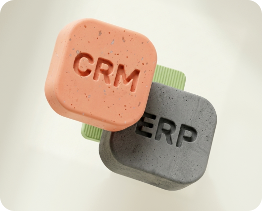
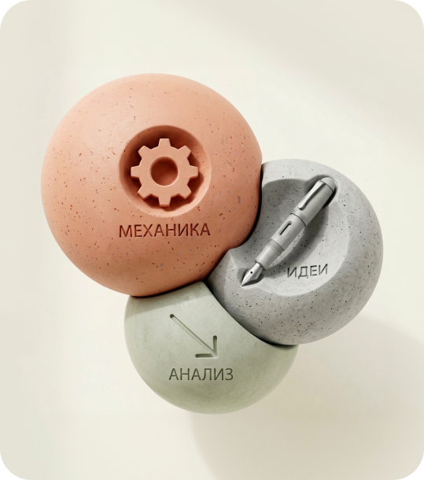
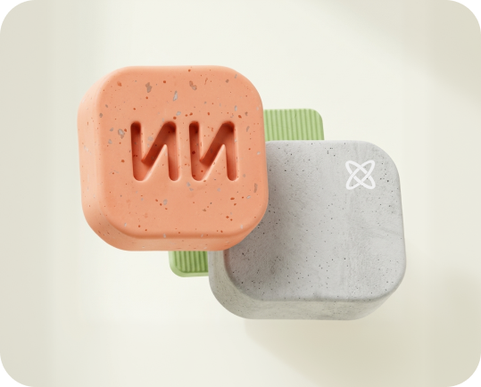
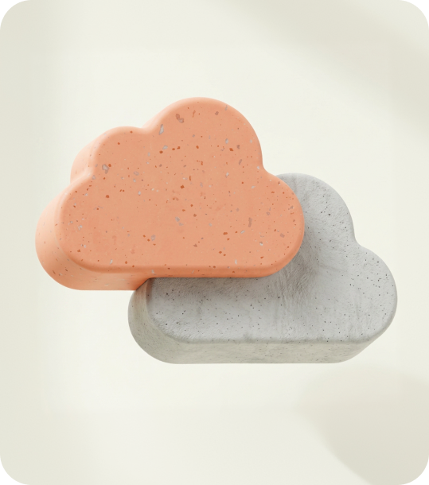

Заявки теряются или
не доходят до обработки
Разрабатываем сложные веб-сервисы, оцифровываем бизнес и внедряем ИИ
Проектируем и внедряем ERP, CRM, ИИ-инструменты
и внутренние сервисы для средних и крупных компаний
product_name = “iPhone 15”
price = 120000
discount = 15
final_price = price - (price * discount / 100)
print(“Цена без скидки”, price) print(“Скидка”, discount) print(“Итоговая цена”, final_price)
final_price = price - (price * discount / 100)
print(“Цена без скидки”, price) print(“Скидка”, discount) print(“Итоговая цена”, final_price)
< / >
Не продаём «ещё один
проект» — доводим систему
до рабочего результата.
Скорее всего, если у вас не одна проблема — система не собрана
Вы можете нанимать сильных людей и покупать дорогие инструменты — но если процессы не связаны, бизнес теряет деньги каждый день. Это не «недоработка». Это отсутствие системы.
Менеджеры работают
как «умеют»
Потери:
до 25–40 конверсии
Нет контроля
качества звонков
CRM, телефония
и 1C не связаны
Бизнес не
масштабируется
Отчёты есть,
но им нельзя доверять
Если вы узнали хотя бы 2–3 пункта,
то проблема не в отдельных задачах
Проблема в том, что у вас нет единой системы
Эти проблемы нельзя «допилить»
их нужно пересобрать в систему
Нельзя починить процессы точечно —
если сама архитектура бизнеса не выстроена
Большинство компаний идут
по одному сценарию:
Мы не улучшаем отдельные элементы
мы собираем систему целиком
Система всё равно не работает. Потому что это набор инструментов, а не единая логика.
Система работает. К нам приходят, когда нужно, чтобы это наконец заработало
Кастомная разработка
под ваши бизнес-процессы, а не под шаблон
Когда нужна разработка

Продукты
собираем сервисы, которыми реально пользуются внутри компании и клиенты
Когда нужен продукт
- Нужно упаковать идею в рабочий инструмент
- Нужен понятный пользовательский сценарий
- Нужно быстро проверить гипотезу
- Нужна платформа под процессы компании

Искусственный интеллект
делаем решения на базе ИИ, а не просто добавляем чат
Когда нужен ИИ-инструмент

BTR
помогаем связать бизнес, команды и процессы через единую систему
Когда нужна система
- Нужно связать несколько отделов между собой
- Нужно убрать ручные операции
- Нужно довести процесс до результата
- Нужна понятная архитектура продукта

Не просто сайт
— SEO, адаптация
и сопровождение
под ключ.
Мы не для всех. И это нормально.
К нам приходят, когда:
Подрядчик
не довёл проект
Внедрение
не дало результата
Задача
нестандартная
Процессы
разваливаются
при росте
Нам доверяют:
- Sminex
- Sminex
- Sminex
- Sminex
- Sminex
- Sminex
- Sminex
Как мы превращаем проблему в продукт
Biometric time tracking
Контроль рабочего времени без ошибок,
Контроль рабочего времени без ошибок,
потерь и «человеческого фактора»
Компания теряла деньги из-за:
- Неточного учёта рабочего времени
- «Buddy punching» — сотрудники отмечались друг за друга
- Ручных процессов и ошибок в расчётах
- Фактические данные не отражали реальную картину
Разработали систему биометрического учёта рабочего времени:
- Идентификация сотрудников по биометрии
- Автоматическая фиксация времени
- Интеграция с системой учёта и расчёта
- Централизованная аналитика
Результат:
- 100% точность учёта рабочего времени
- Исключены манипуляции и ошибки
- Ускорена обработка данных и расчёты
- Прозрачность для руководства
Как итог:
Система стала частью операционной инфраструктуры бизнеса. Не просто контроль времени — управляемость процессами через данные.
TMG ERP
Прозрачное управление инженерной компанией
Прозрачное управление инженерной компанией
без ручного контроля и «приписок»
Компания теряла эффективность из-за:
- Отсутствия единой системы по филиалам и отделам
- Ручного учёта времени и ошибок в отчётности
- «Buddy punching» и фиктивных отметок сотрудников
- Непрозрачной загрузки выездных бригад и подрядчиков
Разработали отраслевую ERP-систему для инженерных компаний:
- Биометрическая идентификация сотрудников через AI face-ID
- Гео-верификация отметок для выездных сотрудников
- Единая система проектов, задач, списаний и отчётности
- Централизованное управление филиалами и HR-контуром
Результат:
- Исключены ошибки и манипуляции с учётом времени
- Руководство видит загрузку сотрудников в реальном времени
- Ускорен контроль проектов, задач и списаний
- Все филиалы работают в едином цифровом контуре
Как итог:
Система стала единым операционным центром компании. Не просто ERP — инструмент управления людьми, проектами и дисциплиной через данные.
RAG system
ИИ-ассистент, который отвечает по документам
ИИ-ассистент, который отвечает по документам
компании, а не «гадает»
Компания сталкивалась с проблемами:
- Сотрудники тратили время на поиск информации в документах
- Ответы поддержки и менеджеров отличались друг от друга
- GPT давал неточные ответы без опоры на реальные данные
- Базы знаний, инструкции и регламенты были разрознены
Разработали RAG-систему для работы с корпоративными данными:
- AI-ассистент ищет ответы по документам компании
- Интеграция с договорами, регламентами, FAQ и базами знаний
- Поиск релевантных фрагментов через векторную индексацию
- Возможность создавать отдельные проекты и хранилища под разные задачи
Результат:
- Сотрудники и клиенты получают точные ответы за секунды
- Снижена нагрузка на поддержку и внутренние команды
- Исключены ошибки из-за устаревшей или неверной информации
- Вся база знаний стала доступна через единый AI-интерфейс
Как итог:
Система превратила документы компании в работающего AI-сотрудника. Не просто чат-бот — интеллектуальный слой поверх корпоративных знаний и бизнес-процессов.
AI auditor
Контроль и улучшение продаж через анализ
Контроль и улучшение продаж через анализ
звонков, а не ручное прослушивание
Отдел продаж терял эффективность из-за:
- Ручного контроля и выборочного прослушивания звонков
- Отсутствия единого рабочего скрипта продаж
- Разного качества диалогов между менеджерами
- Потери клиентов на этапах возражений и следующего шага
Разработали AI-систему анализа звонков:
- Автоматическая расшифровка и оценка разговоров
- Проверка звонков по критериям и этапам сценария
- Подсказки менеджеру по улучшению диалога
- Единая база звонков для контроля и обучения команды
Результат:
- Руководитель получает прозрачную картину по звонкам
- Менеджеры быстрее выходят на качественный диалог
- Снижена ручная роль отдела продаж
- Скрипты стали понятнее, живее и эффективнее
Как итог:
Система стала инструментом развития отдела продаж, а не тотального контроля. Не просто анализ звонков — AI-помощник для роста качества коммуникации и конверсии команды.
Corporate ChatGPT
Корпоративный AI-ассистент для работы с
Корпоративный AI-ассистент для работы с
документами, файлами и внутренними данными
Компания сталкивалась с проблемами:
- Сотрудники тратили время на поиск информации в источниках
- Внутренние знания были разбросаны между файлами и отделами
- Обычный ChatGPT не учитывал специфику компании и внутренние данные
- Возникали риски при использовании публичных AI-сервисов для рабочих задач
Разработали корпоративный аналог ChatGPT:
- AI-ассистент в закрытом корпоративном контуре
- Работа с PDF, Word, Excel и внутренними документами
- Поиск и анализ информации по корпоративной базе знаний
- Интеграция AI в ежедневные процессы сотрудников
Результат:
- Сотрудники быстрее находят нужную информацию
- Снижена нагрузка на внутренние команды поддержки
- Ускорена работа с документами и корпоративными данными
- Компания получила безопасный AI-инструмент для внутренних процессов
Как итог:
Система стала единым AI-интерфейсом для работы с корпоративными знаниями. Не просто ChatGPT — корпоративный интеллектуальный помощник для бизнеса и сотрудников.
Administrative time management
Цифровой контроль рабочего времени
Цифровой контроль рабочего времени
и дисциплины без таблиц и ручного учёта
Компания сталкивалась с проблемами:
- Отсутствие прозрачного контроля рабочего времени
- Ручной учёт посещаемости и переработок
- Ошибки и потери времени из-за человеческого фактора
- Сложность контроля сотрудников между филиалами и отделами
Разработали систему административного учёта времени:
- Учёт рабочего времени и активности сотрудников
- Централизованный контроль посещаемости и дисциплины
- Единая система аналитики по отделам и филиалам
- Автоматизация отчётности и административных процессов
Результат:
- Руководство получило прозрачную картину занятости сотрудников
- Снижено количество ошибок в учёте времени
- Ускорена работа HR и административного отдела
- Контроль рабочего времени стал полностью цифровым
Как итог:
Система стала единым инструментом управления дисциплиной и административными процессами. Не просто тайм-трекер — цифровая инфраструктура контроля эффективности компании.
Audience engagement analytics
Аналитика вовлечённости аудитории
Аналитика вовлечённости аудитории
для событий, контента и digital-платформ
Компания сталкивалась с проблемами:
- Не было прозрачного понимания вовлечённости аудитории
- Сложно оценивать интерес к контенту и активностям
- Данные собирались из разных источников вручную
- Руководство не видело полную картину поведения пользователей
Разработали систему аналитики вовлечённости:
- Сбор и анализ действий аудитории в едином интерфейсе
- Отслеживание активности пользователей и ключевых событий
- Визуальная аналитика по взаимодействию с контентом
- Централизованная система метрик для оценки эффективности
Результат:
- Команда получила прозрачную аналитику по аудитории
- Стало проще выявлять сильный и слабый контент
- Снижено время на ручной анализ данных
- Решения начали приниматься на основе реального поведения пользователей
Как итог:
Система стала единым центром аналитики пользовательской вовлечённости. Не просто отчёты — инструмент понимания аудитории и управления эффективностью digital-продуктов.
Debt & bankruptcy management
Автоматизация процессов взыскания
Автоматизация процессов взыскания
и банкротства в единой системе
Компания сталкивалась с проблемами:
- Разрозненное ведение дел и документов
- Ручной контроль этапов взыскания и банкротства
- Потеря информации между юристами и отделами
- Сложность отслеживания сроков, статусов и загрузки команды
Разработали систему управления процессами взыскания:
- Единая платформа для ведения дел и клиентов
- Контроль этапов банкротства и юридических процедур
- Централизованное хранение документов и истории взаимодействий
- Аналитика по загрузке сотрудников и статусам дел
Результат:
- Ускорена работа юристов и операционных команд
- Снижено количество ошибок и потери информации
- Руководство получило прозрачный контроль по всем процессам
- Работа с делами стала системной и прогнозируемой
Как итог:
Система стала единым цифровым контуром для процессов взыскания и банкротства. Не просто CRM — инфраструктура управления юридическими процессами и контролем исполнения.
Meeting documentation app
Автоматизация протоколов и фиксации
Автоматизация протоколов и фиксации
договорённостей после встреч
Компания сталкивалась с проблемами:
- Договорённости после встреч терялись или фиксировались вручную
- Сотрудники по-разному вели протоколы и заметки
- Руководство не видело прозрачного статуса задач совещаний
- Подготовка итогов встреч занимала много времени
Разработали AI-систему документирования встреч:
- Автоматическая фиксация и структурирование договорённостей
- Формирование протоколов и итогов совещаний
- Выделение задач, ответственных и следующих шагов
- Централизованное хранение истории встреч и решений
Результат:
- Снижено время на оформление итогов встреч
- Команда перестала терять важные договорённости
- Повысилась прозрачность исполнения задач
- Руководители получили единый контур контроля коммуникаций
Как итог:
Система стала цифровым помощником для управления встречами и внутренними коммуникациями. Не просто заметки — инструмент фиксации решений, задач и ответственности внутри команды.
Система не строится «по вдохновению»
она строится по процессу
Как мы работаем
Инженерный подход: прозрачные этапы, понятные ожидания, контрольные точки и гибкие методологии.
Погружаемся в задачу
Разбираем бизнес-процесс и находим реальную проблему.
Разрабатываем и внедряем
Создаём систему и интегрируем её в бизнес.
Смотрим на процесс
Проектируем архитектуру, а не набор разрозненных экранов.
Доводим до результата
Поддерживаем, улучшаем и масштабируем решение.
Как запускаем
Без хаоса: фиксируем цель, собираем дорожную карту и двигаемся короткими понятными этапами.
Формулируем гипотезу
Определяем, какой результат должен получить бизнес.
Собираем требования
Описываем сценарии, ограничения и точки контроля.
Делаем MVP
Быстро проверяем решение на реальных процессах.
Открываем рост
Докручиваем продукт до рабочего инструмента.
Методологии работы
Гибкий подход: выбираем формат под задачу — от быстрых итераций до строгого проектного контроля.
Agile
Работаем спринтами, когда важна скорость обратной связи.
Контроль сроков
Фиксируем этапы, ответственных и ожидаемый результат.
Аналитика
Смотрим, что реально происходит в процессе.
Риски
Заранее выносим узкие места, чтобы не тушить пожары.
Мы не исчезаем после релиза
Большинство проектов ломаются не на разработке — а на внедрении. Мы остаёмся и доводим до результата. Построим отзыв подтверждения.